Summary
The short answer is no
Do not trade Kronos-small with real money. Used as-is or fine-tuned, it never beat its benchmark robustly after costs.
- No signal on Bitcoin. Up/down calls were right 49.5% of the time, a coin flip, and its most confident calls were right only 45% of the time.
- A weak but consistent ranking signal on stock indices. The rank correlation between forecast and outcome was positive in every index test (+0.06 to +0.18). Strongly positive forecasts were right about two-thirds of the time in 3 of the 4 windows with enough of them.
- Forecasts lean bearish and are overconfident. Kronos often predicted falls after rises, so "buy only on a predicted rise" sat in cash through bull markets. Real moves were up to 1.9× wider than its forecast range.
- The edge is too small for real-world frictions. Every advantage vanished at slightly higher fees, after a one-period delay, or against simply holding the index.
- Fine-tuning improved the fit, not the forecasts. Validation loss fell 15% and calibration improved, but ranking skill collapsed on the S&P 500.
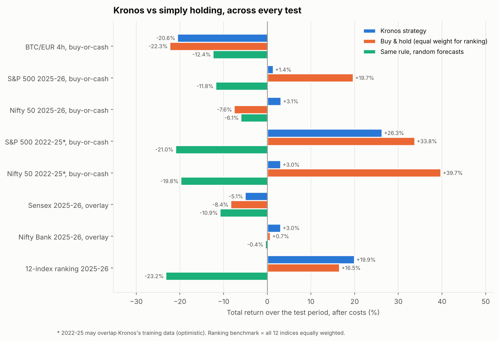
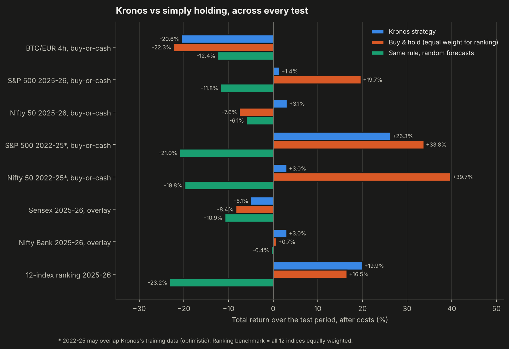
| # | Experiment | Data | Verdict |
|---|---|---|---|
| 1 | Buy-or-cash on Bitcoin | BTC/EUR, 4-hour, Sep 2025 – Oct 2026 | ✗ Fail: no forecasting skill; worse than random forecasts |
| 2 | Buy-or-cash on stock indices | S&P 500, Nifty 50, daily, 2022 – 2026 | ✗ Not usable: holding won in 3 of 4 windows |
| 3 | Stay-invested overlay | Sensex, Nifty Bank, daily, Sep 2025 – Oct 2026 | ✗ Fail: advantage gone at 0.25% fees |
| 4 | Weekly ranking of 12 indices | 12 global indices, weekly, 2022 – 2026 | ✗ Fail: information ratio 0.27, below 0.5 required |
| 5 | Kronos fine-tuned on indices | 12 indices to 2024; tested on Nifty 50, S&P 500 | ✗ Fail: better fit, not better forecasts |
§2 · Method
What we built and how we tested
Kronos is a family of transformers pre-trained on candlestick data (open, high, low, close, volume) from more than 45 exchanges. It only forecasts prices; it has no trading, risk or execution logic. Around it we built a probabilistic forecaster (16 sample paths per decision, giving the mean forecast return, its spread, and the share of paths ending higher), long-only strategies with no leverage, a risk layer with circuit breakers and a kill switch, paper and live brokers, monitoring, and a walk-forward backtester. Live trading stayed locked throughout.
Rules of the test
- No look-ahead. A forecast at bar t uses data up to t and is filled at the next bar's open. A regression test checks that changing future data never changes past forecasts.
- Unseen data. The main window (1 Sep 2025 – 26 Oct 2026) starts after Kronos was published. An older 2022 – 2025 window may overlap its training data and is marked with *.
- Realistic costs. Bitcoin: 0.40% fee plus 0.10% slippage per trade. Indices: 0.10% plus 0.05%. Stress tests double fees, triple slippage and delay execution.
- Two baselines. Every strategy faces buy-and-hold (or equal weight) and the same rule driven by random forecasts. A real signal must beat both.
- Pre-registration. Thresholds and pass/fail rules were committed to git before each run. Tuning, where allowed, used an earlier period only.
| Measure | What it tells you |
|---|---|
| Hit rate | Share of up/down calls that were right (50% is a coin flip) |
| Information coefficient (IC) | Rank correlation between forecast and outcome (0 means no skill) |
| Brier score | Accuracy of the "chance of a rise". Lower is better; always guessing the base rate scores about 0.25 |
| Spread ratio | Real moves ÷ forecast range (1 is well calibrated; above 1 is overconfident) |
| Sharpe ratio | Return per unit of volatility, annualised |
| Information ratio | Extra return over the benchmark per unit of extra risk |
| Max drawdown | Largest fall from a previous peak |
§3 · Context
The test period
The unseen window held three very different markets: Bitcoin fell about a quarter in euros, the S&P 500 rose about a fifth, and the Nifty 50 drifted lower. A useful signal should help in all three.
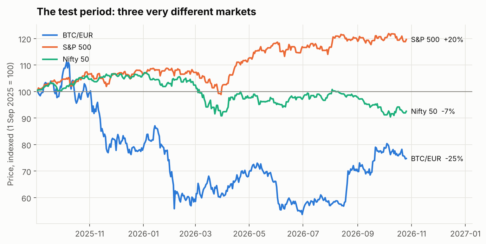
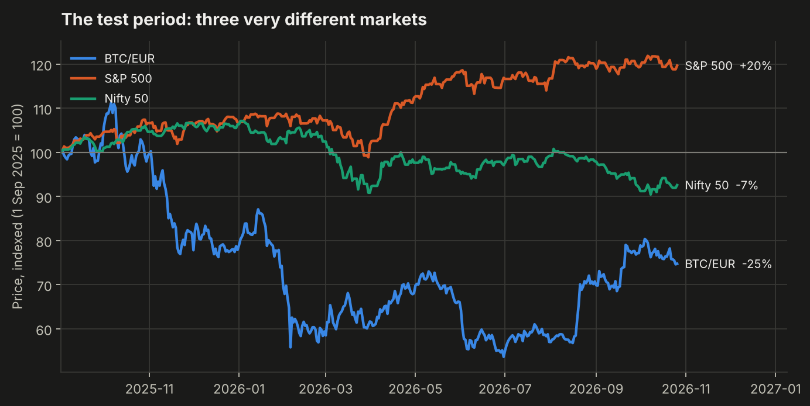
§4 · Experiment 1
Bitcoin, 4-hour candles
€20 start, a decision every 4 hours (2,525 decisions on a GPU; 839 decisions every 12 hours on CPU as a cross-check), forecasting 24 hours ahead. Buy when the expected move beats 1.5× the round-trip cost and at least 58% of paths end higher; sell when the outlook turns negative; stop at a 20% drawdown.
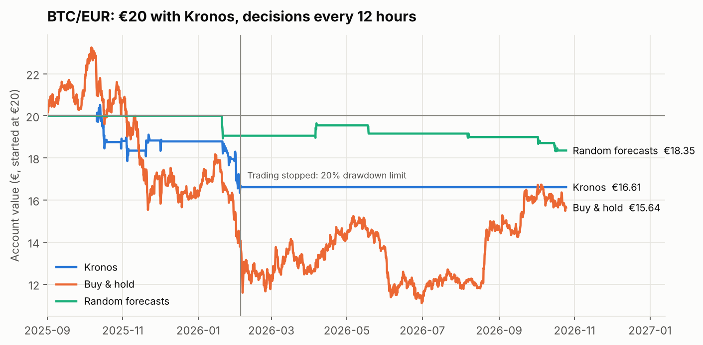
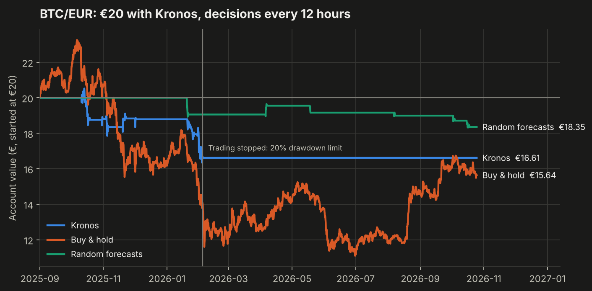
| Kronos 4h | Kronos 12h (CPU) | Random 4h | Buy & hold | |
|---|---|---|---|---|
| €20 became | €15.88 | €16.61 | €17.51 | €15.53 |
| Return | −20.6% | −16.9% | −12.4% | −22.3% |
| Hit rate | 49.5% | 48.6% | ~50% | — |
| Information coefficient | −0.013 | −0.008 | +0.012 | — |
| Right when forecast > +1.5% | 44.7% (190) | 48.1% (52) | — | — |
Kronos lost slightly less than holding Bitcoin, but only because it spent most of the year in cash while Bitcoin fell. It lost more than random forecasts did, and its direction calls were a coin flip.
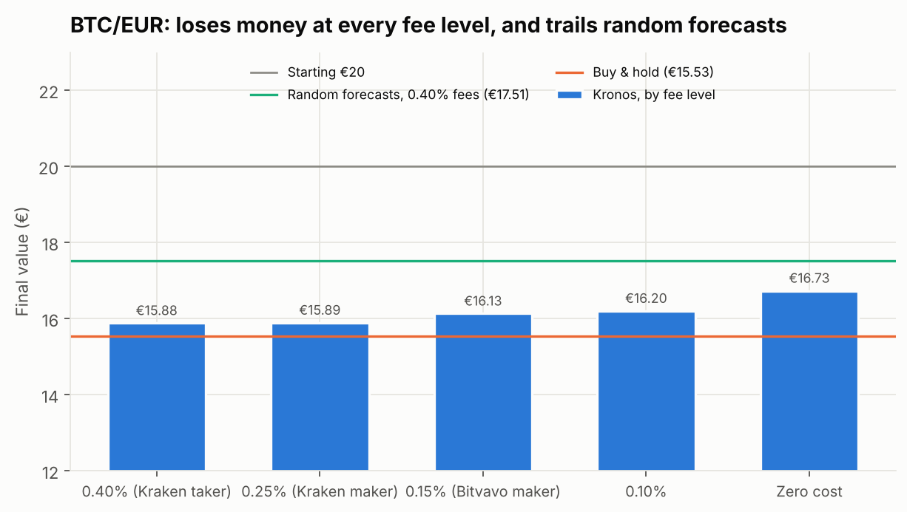
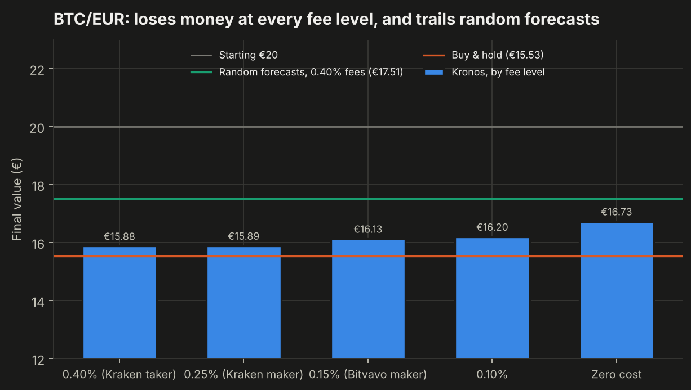
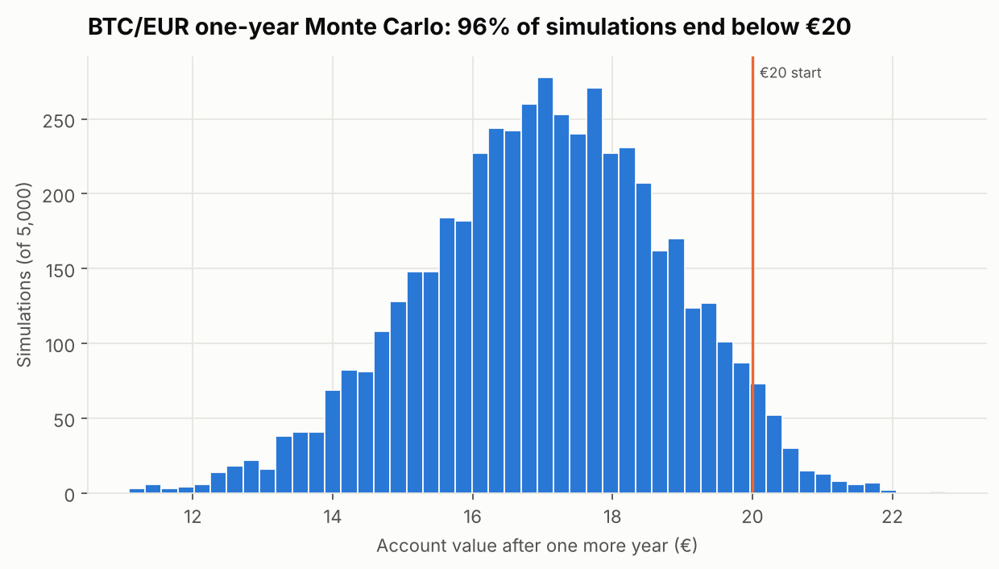
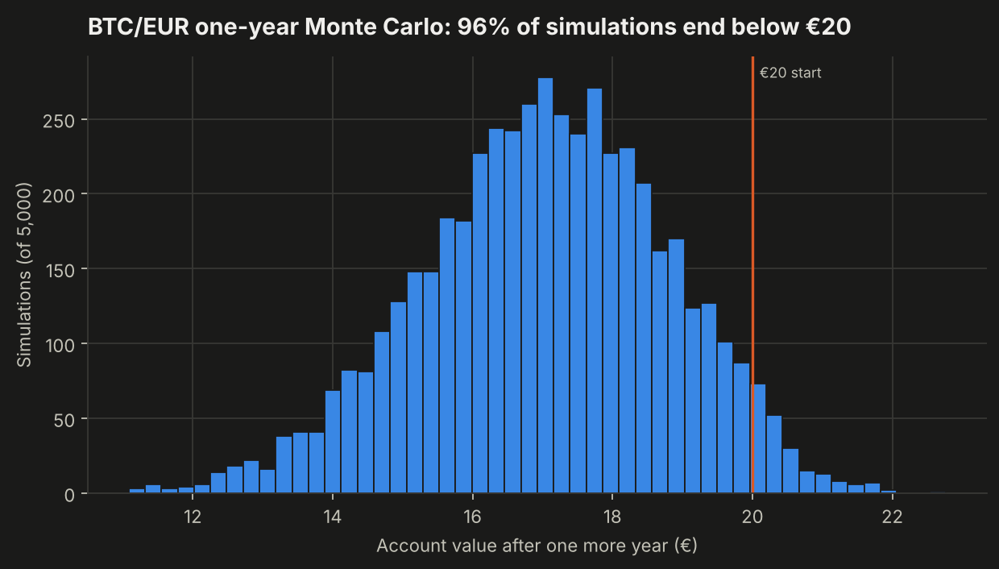
§5 · Experiment 2
S&P 500 and Nifty 50, daily
Daily candles, about 1.6 years of context, forecasting one trading week ahead, the same thresholds as Bitcoin, 0.10% fees plus 0.05% slippage, and a weekday trading calendar.
| Window | Kronos | Buy & hold | Random | Time invested | Hit rate | IC |
|---|---|---|---|---|---|---|
| S&P 500, Sep 2025 – Oct 2026 | +1.4% | +19.7% | −11.8% | 6% | 42.8% | 0.18 |
| Nifty 50, Sep 2025 – Oct 2026 | +3.1% | −7.6% | −6.1% | 38% | 59.5% | 0.15 |
| S&P 500, 2022 – Aug 2025* | +26.3% | +33.8% | −21.0% | 17% | 47.6% | 0.10 |
| Nifty 50, 2022 – Aug 2025* | +3.1% | +39.7% | −19.8% | 23% | 51.0% | 0.06 |
Kronos beat random forecasts in every window and fell less at its worst, but holding the index returned more in three of four. It came out ahead only in the one falling market.
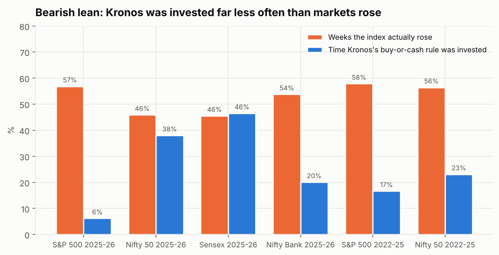
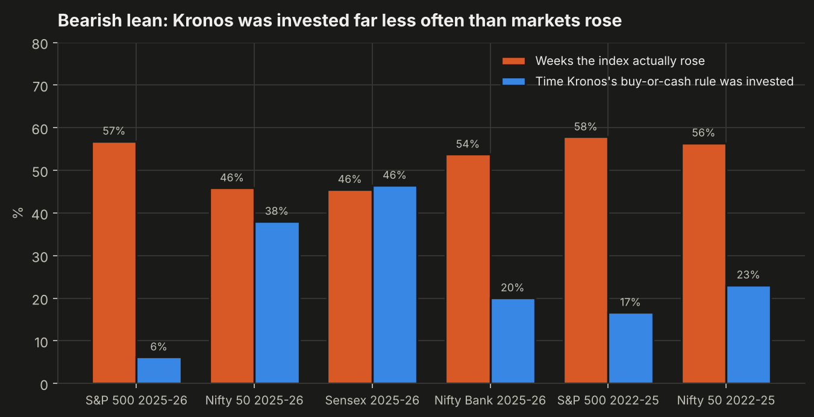
§6 · Across all tests
Forecast quality
The clearest pattern of the study: a small but consistent ranking signal on stock indices, and none on Bitcoin. Up/down calls stay near a coin flip almost everywhere, because the bearish lean drags them down in rising markets.
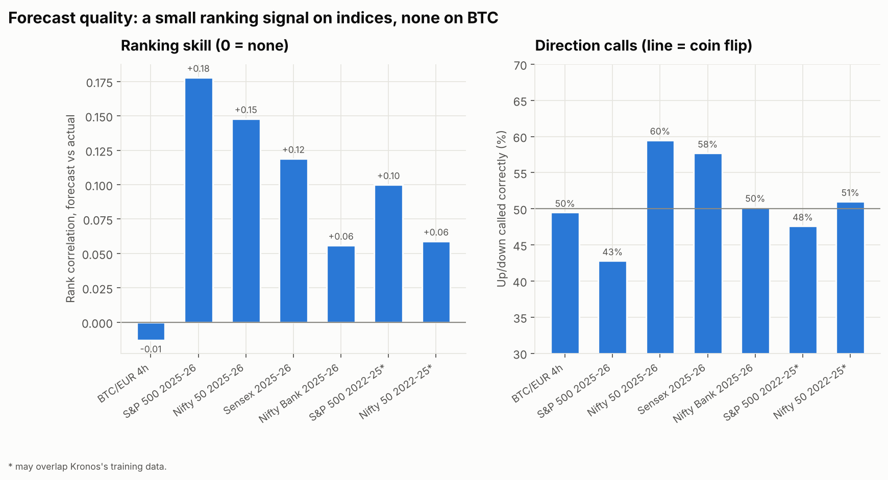
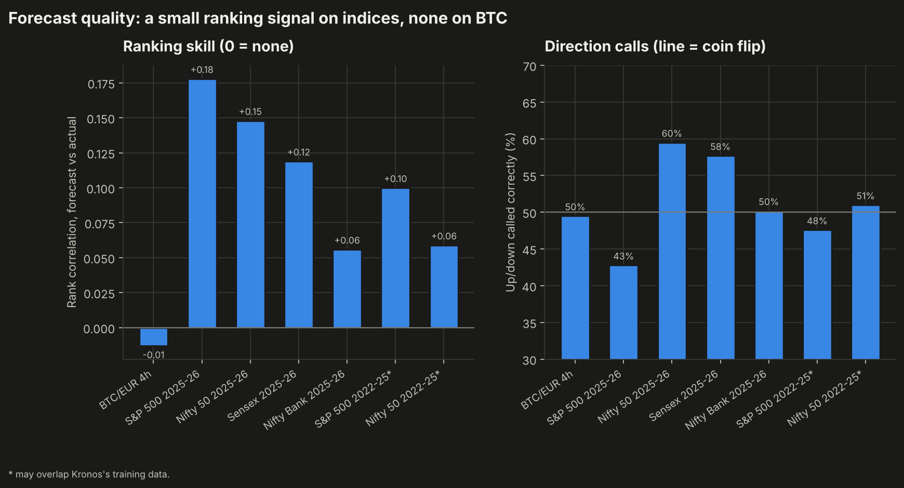
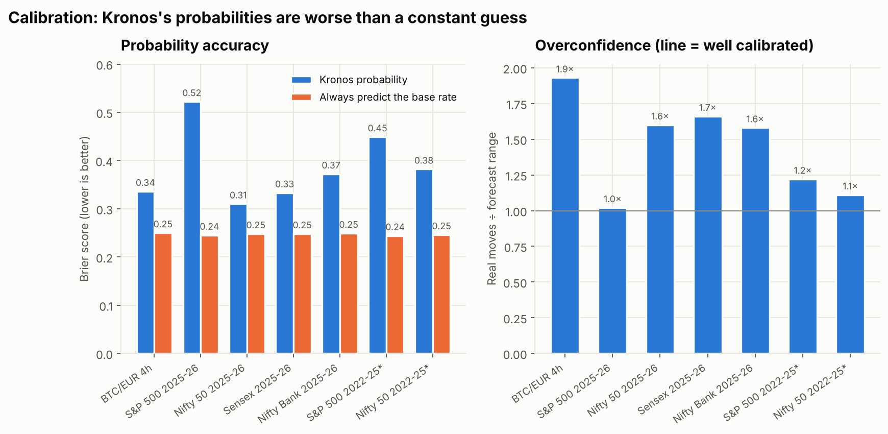
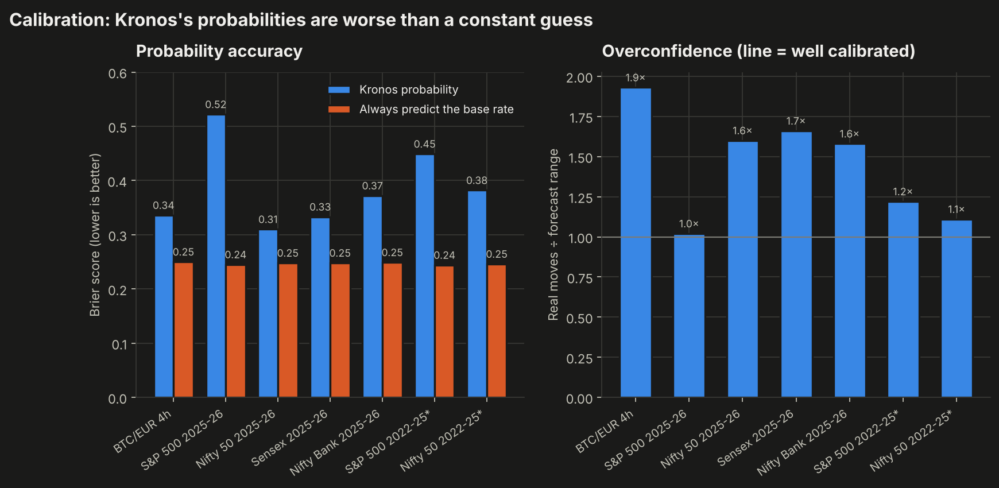
§7 · Experiment 3
Stay invested, cut when bearish
Since Kronos leans bearish, the logic was flipped: stay fully invested and step down to 50% only on strongly bearish forecasts (at most 30% of paths up and a mean forecast of −1% or worse), returning to 100% once 45% of paths point up. The test used two indices not seen before. To pass, each index had to meet all four rules below.
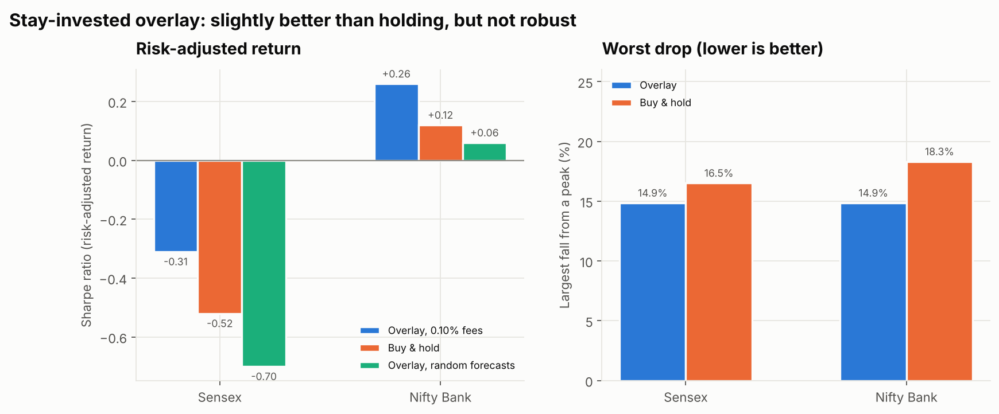
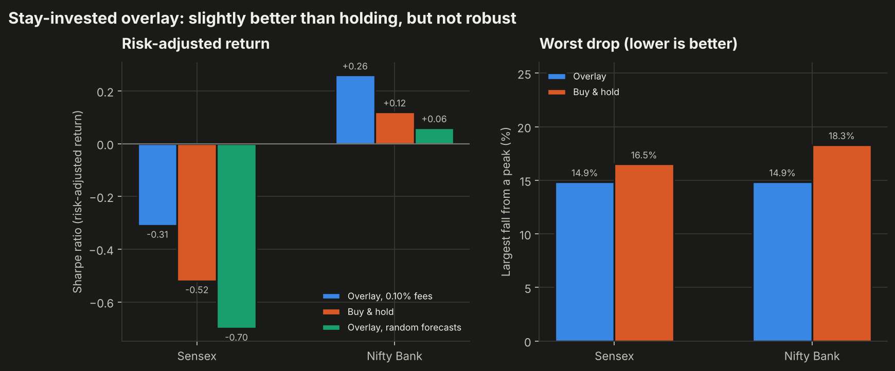
| Rule | Sensex | Nifty Bank |
|---|---|---|
| Return vs buy & hold | −5.1% vs −8.4% | +3.1% vs +0.7% |
| 1 · Sharpe at least 0.2 above buy & hold | ✓ +0.21 | ✗ +0.14 |
| 2 · Smaller worst drop | ✓ 14.9% vs 16.5% | ✓ 14.9% vs 18.3% |
| 3 · Beats random forecasts | ✓ | ✓ |
| 4 · Rule 1 still holds at 0.25% fees | ✗ | ✗ |
| Verdict | ✗ Fail | ✗ Fail |
About 3 points of extra return and 2–3 points less drawdown, but not enough to survive slightly higher fees, and a one-day delay lowers the Sharpe on both (Sensex −0.45, Nifty Bank −0.01). Sensex moves almost exactly with the Nifty 50 (0.99 daily correlation), so it adds little independent evidence.
§8 · Experiment 4
Weekly ranking of 12 global indices
This test used only the signal that exists, the ranking, and stayed invested. Each Friday, the 12 indices (S&P 500, Nasdaq 100, Euro Stoxx 50, DAX, CAC 40, FTSE 100, Nikkei 225, Hang Seng, Nifty 50, KOSPI, ASX 200, MSCI EM) were ranked by forecast. We held the top two and compared with holding all twelve equally. Settings were tuned on 2022 – Aug 2025, then frozen and tested once.
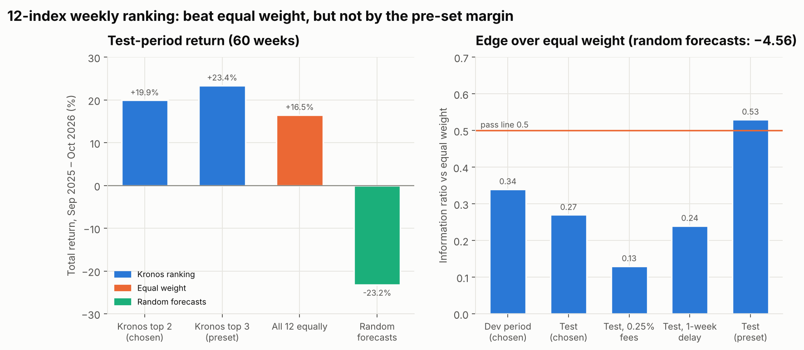
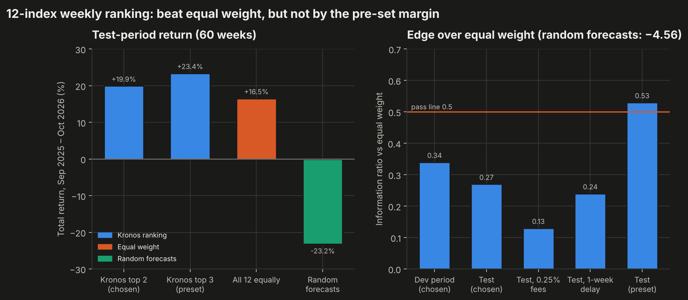
| 60 test weeks | Top 2 (chosen) | Top 3 (preset) | Equal weight | Random |
|---|---|---|---|---|
| Total return | +19.9% | +23.4% | +16.5% | −23.2% |
| Sharpe | 1.34 | 1.55 | 1.15 | −1.37 |
| Max drawdown | −8.3% | −8.0% | −9.3% | −27.0% |
| Information ratio | 0.27 | 0.53 | — | −4.56 |
| Weekly IC (t-stat) | 0.024 (0.47) | 0.024 (0.47) | — | −0.074 |
✗ Fail: three of four rules met, but the information ratio of 0.27 is below the 0.5 required. It is also unlikely to be a real edge:
- Ranking skill is statistically indistinguishable from zero, both in the test (t = 0.47) and in tuning (t = 0.18).
- Delaying every decision by a week gave the same extra return. The gain came from which indices the slow-moving portfolio happened to hold, not from week-to-week forecasts.
- The preset settings would have passed, but switching after seeing the test is the selection bias pre-registration exists to stop. The random version mostly lost to its own trading costs.
§9 · Experiment 5
Fine-tuning Kronos on stock indices
The forecasting part of Kronos was retrained on the 12 indices' daily history up to the end of 2024 and checked on January – August 2025. It was then compared with the original model on the Nifty 50 and S&P 500 over the unseen window. It passed only if ranking skill rose and the Brier score fell on both indices.
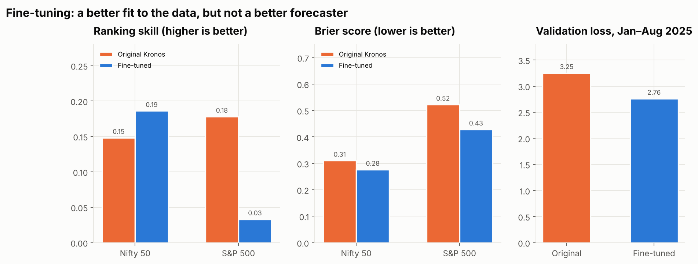
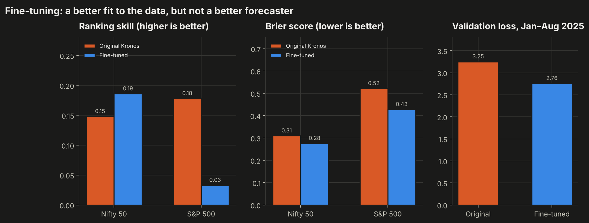
| Nifty 50 original | Nifty 50 tuned | S&P 500 original | S&P 500 tuned | |
|---|---|---|---|---|
| Information coefficient | 0.148 | 0.186 | 0.178 | 0.033 |
| Brier score | 0.310 | 0.276 | 0.522 | 0.428 |
| Buy-or-cash return | +3.1% | −0.1% | +1.4% | +0.1% |
| Overlay return | −4.9% | −4.5% | +11.0% | +10.2% |
| Buy & hold | −7.6% | +19.7% | ||
✗ Fail. Validation loss fell from 3.25 to 2.76 and probabilities became better calibrated on both indices, but ranking skill collapsed on the S&P 500 and neither strategy improved. A model that fits candle data better is not necessarily better at calling next week's direction. The original model's Nifty 50 numbers matched an earlier run exactly, which confirms the pipeline is deterministic.
§10 · Transparency
Errors found and fixed during the study
Each was fixed before the affected conclusions were drawn.
| Issue | Effect | Fix |
|---|---|---|
| Monte Carlo "haircut" added return to losing strategies | A losing strategy showed a +64% median | Haircut only shrinks positive drift |
| Backtest ran past the end of a sub-window | 2022 – 2025 results and tuning halves included later data | Stops at the last decision; regression test; results re-run |
| Exchange library ignored the network proxy | Market-data downloads failed | Proxy settings honoured |
| Half-precision inference, tried for speed | Mean forecast moved from −3% to −19% | Rejected; full precision only |
| Random forecasts churned the ranking portfolio | About 145% weekly turnover, about 11% a year in costs | Holding buffer added before any Kronos ranking result |
§11 · Reading the results
Limitations and conclusions
Limitations
- One year of unseen data. Daily forecasts a week ahead give only about 57 independent weeks per index, so small effects can't be confirmed or ruled out.
- Not perfectly blind. Later experiments were designed after earlier ones, and some unseen-window results were already known. Pre-registration limits this but cannot remove it.
- Kronos-small only. The larger public model was not tested.
- Local currencies. A euro investor in these indices would also face currency moves.
- Simplified execution. Fills at the next open with fixed slippage; holidays beyond weekends are not modelled; some indices lack volume data.
Conclusions
- Do not trade Kronos-small with real money in any of the tested forms.
- Simply holding a broad index fund was the hardest benchmark to beat, with no model, server or upkeep.
- The infrastructure works and is tested. What is missing is a signal.
- More promising research would add information Kronos does not see, such as company fundamentals, or pick stocks within one market using historical index membership. Either would need the same pre-registered testing before any paper trading.
Source code, raw results and pre-registrations are in the cntarun/autotrader repository on GitHub: report in docs/report/, detailed results in docs/BACKTEST_RESULTS.md, GPU notebooks in notebooks/. Charts are regenerated by docs/report/make_report_charts.py.